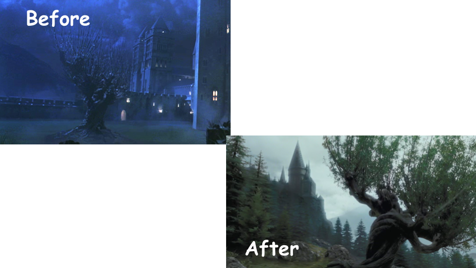

Prisoner of Azkaban
Harry Potter and the Prisoner of Azkaban contains many important changes that are kept throughout the rest of the movies. After the new director for this movie came, many places in the castle were redesigned to be more stylistic. In addition to this, a new and very hilly back area past the castle is added to enforce that Hogwarts is located in the hilly areas of Scotland.
To begin, we can see a new Clock Tower added to the back of the Quad, along with a courtyard added in front. The Clock Tower foreshadows that time plays an important role later in the movie.

Right behind the Clock Tower, the unnamed tower circled in yellow was replaced with the new hospital wing location, and it connects the Clock Tower to the rest of the school. It is unknown what was inside this tower.
Continuing with changes to the back of the Quad, new windows were added to either side of the Clock Tower, likely for aesthetics.
Finishing up with the Quad, Gryffindor Tower was made to be taller than the nearby Divination Tower. In addition to this, the bottom of it was extended all the way to the ground instead of stopping midway. Also, the bottom window in the old version of the tower was removed. While the bottom of the Divination tower was never seen until later on in the series, it is safe to say that the same to the bottom of it was changed in a similar manner.
Next, the Bell Towers became taller and more cathedral-like. This gives them a more realistic feel. The "after" picture is from the Half-Blood Prince set model, but they appear the same in both movies.

Similar to the Bell Towers, the Central Tower also got a redesign to be more cathedral-like instead of taking on a more fantasy-like appearance.
In addition, a new tower was added. Referred to by Albus Dumbledore as the Dark Tower, it is where Sirius Black was held at the end of the movie.
Due to the addition of the Dark Tower, the Defense Against the Dark Arts tower needed to be moved to the left a bit to give the new tower space. However, because it was moved to where the Suspension Bridge was, the bridge had to be relocated to around where the Defense Against the Dark Arts Tower used to stand before. The arrows point to where the DADA tower stands during each movie. and the circles show the location of the Suspension Bridge.
Originally, there was a bit of the Training Grounds that sat to the left of the Defense Against the Dark Arts Tower. However, much of it needed to be removed, likely because the Defense Against the Dark Arts Tower moved into some of the space it took up.
We can see a few interior changes in this movie in addtion to the ones of the exterior. First, the Fat Lady was moved from her own corridor to the Grand Staircase. She was also portrayed by a different actress.
In the Great Hall, a new owl podium was added in front of the table the staff sits at. This is where Dumbledore now makes announcements to the school instead of from his chair at the table as where he used to.
Right outside the Great Hall in the Entrance Hall, the corridor leading to the Grand Staircase was removed so the staircase now connects directly to the Entrance Hall. Note the gold statue that was removed; it comes back in later films. This is the first of many changes to the Entrance Hall throughout the movies.
Back outside, we can see that Hagrid's Hut was redesigned and moved towards the other side of the school, past the new Wooden Bridge. It used to be located right next to the Training Grounds on a flat area of land.
Finally, the Whomping Willow was relocated from the Training Grounds to a little farther back from the new area behind the castle where Hagrid's Hut is now. In the "before" picture, the Bell Towers can be seen behind the Willow while in the "after" picture, the back of the Great Hall and Grand Staircase Tower can be seen.
